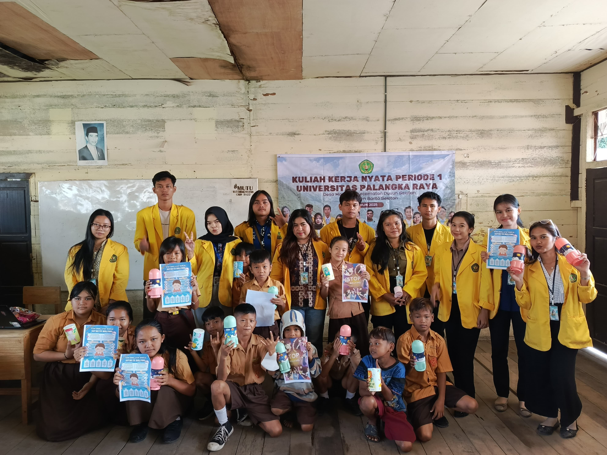

Sosialisasi Anti Bullying dan Gemar Menabung
Di SD Desa Mangaris masih ada dua masalah utama, yaitu bullying dan anak-anak belum terbiasa menabung. Bullying sering terjadi tapi belum ada cara khusus buat menanganinya, sementara kebanyakan siswa lebih sering jajan sembarangan. Karena itu, perlu ada program yang bisa membuat suasana sekolah lebih aman sekaligus mengajarkan anak pentingnya mengatur uang sejak kecil.
Dokumentasi Kegiatan

- Hari/Tanggal: Sabtu, 02 Agustus 2025
- Lokasi: Ruang Kelas 5 SD Mangaris
- Peserta: Anak-anak kelas 4, 5, 6 SD Mangaris
- -
Tujuan Program
Dengan ini Siswa SD Desa Mangaris mengerti bahaya bullying dan pentingnya menabung. Tim KKN juga membuat media edukasi berupa PPT/poster sederhana serta membagikan celengan kepada siswa agar mereka mau menyisihkan sebagian uangnya untuk ditabung.